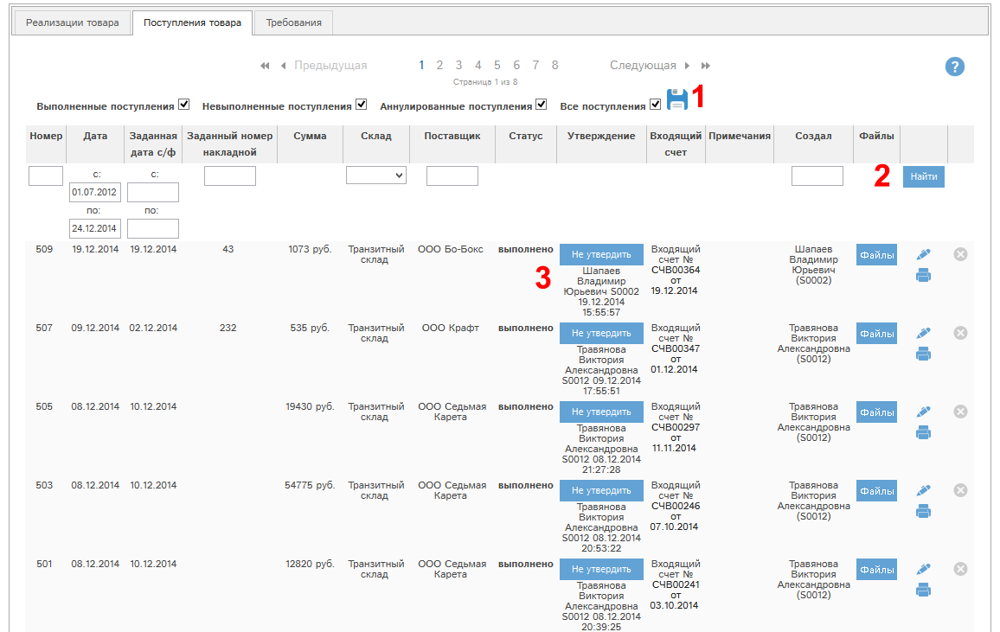

При наличии у Вас соответствующих прав Вам доступен раздел «Поступления/реализации» в секции "Продажи". В этом разделе на вкладке "Поступления" показан список поступлений, с которыми Вы работаете в программе «Мобильный офис».

Рис. 5.37 Фрагмент окна «Поступления».
Фильтр статусов (1) позволяет отфильтровать список поступлений по статусам:
- Режим «Выполненные поступления» - только поступления в статусе «выполнено»
- Режим «Невыполненные поступления» - только поступления в статусе «не выполнено».
- Режим «Аннулированные поступления» - только поступления в статусе «Аннулировано»
- Режим «Все поступления» - поступления со всеми статусами.
Можно выделить несколько статусов, например: поступления только в статусах выполнено, не выполнено.
Нажатие кнопки  позволяет запомнить в программе выбранные вами
статусы, и когда вы снова зайдете в раздел «Поступление», то будут показаны документы
по сохраненному ранее набору статусов.
позволяет запомнить в программе выбранные вами
статусы, и когда вы снова зайдете в раздел «Поступление», то будут показаны документы
по сохраненному ранее набору статусов.
Для фильтрации поступлений по статусу необходимо отметить требуемые статусы и нажать кнопку «Найти» (2).
Кроме того, в списке можно искать поступления по полям:
- Номер поступления
- Дата создания
- Заданный номер с/ф
- Контрагент (поставщик)
- Склад
- Кто создал.
В колонке «Статус» указан статус поступления.
В колонке «Утверждение» (3) при наличии прав доступна кнопка изменения утверждения/снятия утверждения.
С помощью кнопки  у конкретного поступления можно просмотреть
или отредактировать данное поступление.
у конкретного поступления можно просмотреть
или отредактировать данное поступление.
С помощью кнопки  можно аннулировать поступление.
можно аннулировать поступление.
Если кнопка серого цвета -  ,
то аннулировать данное поступление невозможно. Это может быть по нескольким
причинам:
,
то аннулировать данное поступление невозможно. Это может быть по нескольким
причинам:
- У Вас нет прав на аннулирование поступления;
- Поступление не в статусе «не утверждено».
При нажатии кнопки  будет выведено сообщение со списком причин, по
которым невозможно аннулировать это поступление.
будет выведено сообщение со списком причин, по
которым невозможно аннулировать это поступление.
Настройка колонок реестра
Все основные реестры программы могут быть индивидуально сконфигурированы: вы можете указать, какие колонки и в какой последовательности вы желаете видеть. Всегда можно вернуться к стандартному виду реестра. Рассмотрим работу этой функции на примере реестра контрагентов.
Для настройки реестра нажмите кнопку  :
:

Откроется окно настройки. Слева указаны доступные колонки (1), справа - колонки, которые показаны в реестре (2):

Для перемещения столбцов между блоками 1 и 2 выделите требуемые столбцы (можно выделить несколько столбцов, нажав и удерживая ctrl при их выделении), и нажмите кнопку > для перемещения столбцов из доступных в видимые, либо кнопку < для перемещения из видимых в доступные столбцы.
Доступна сортировка видимых столбцов (в блоке 2). Для того, чтобы поднять или опустить столбец или их группу, выделите требуемые столбцы и нажмите  для подъема или
для подъема или  для спуска столбца.
для спуска столбца.
Для того, чтобы сохранить внесенные изменения, нажмите Готово. Реестр обновится, и будут показаны выбранные вами столбцы в выбранной вами последовательности.
Для того, чтобы восстановить стандартный вид реестра, нажмите кнопку "Сделать стандартными".